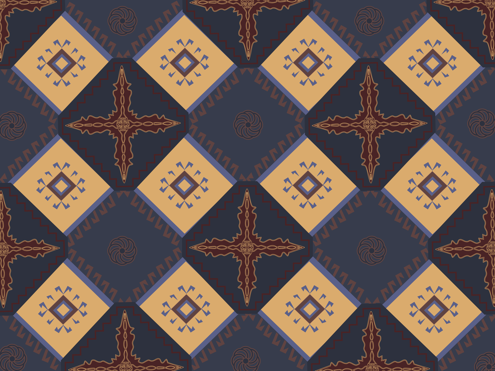
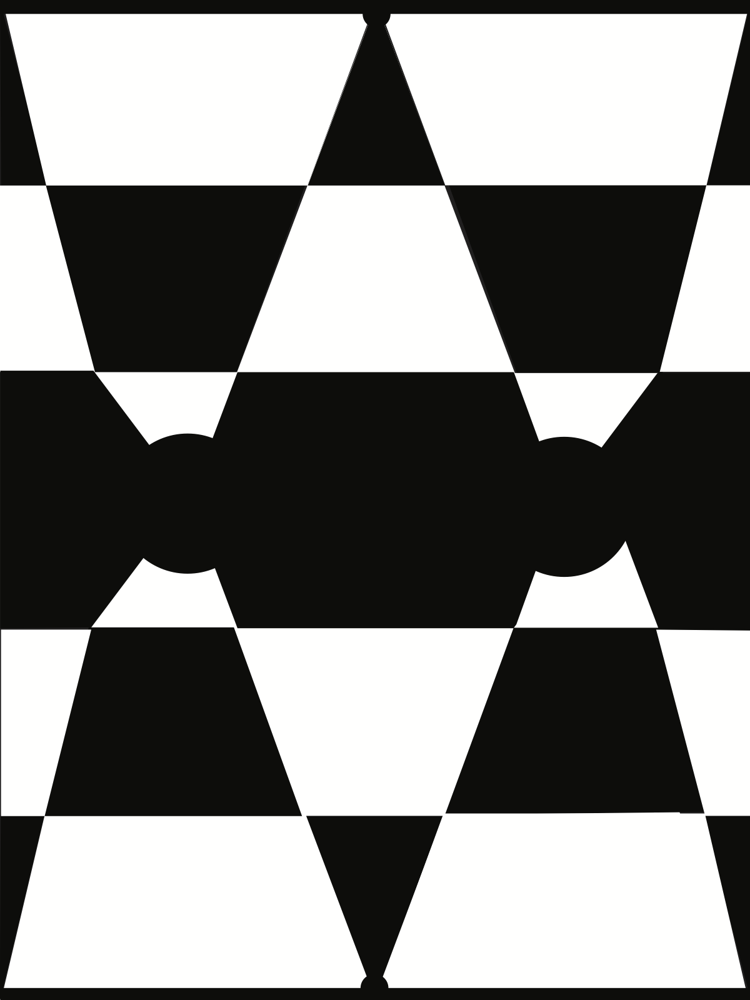

01 • Graphic Design Final
Masquerade Waltz
A graphic design final blending AI, vector illustration, and my own handwritten Armenian lettering, inspired by composer Aram Khachaturian.
Graphic design, illustration, pattern work, composition studies, and photography.
01 • Graphic Design Final
A graphic design final blending AI, vector illustration, and my own handwritten Armenian lettering, inspired by composer Aram Khachaturian.

02 • Pattern Design
A pattern system inspired by my Armenian identity and Christianity, translating heritage into a modern visual language.

03 • Vector Illustration
Vector renderings recreated from real photos, focused on light, reflection, and material.

04 • Composition Study
A design and composition study exploring abstraction, balance, and visual tension.
05 • Photography
Studio product images for a commercial website, with clean lighting, consistent angles, and web ready clarity.